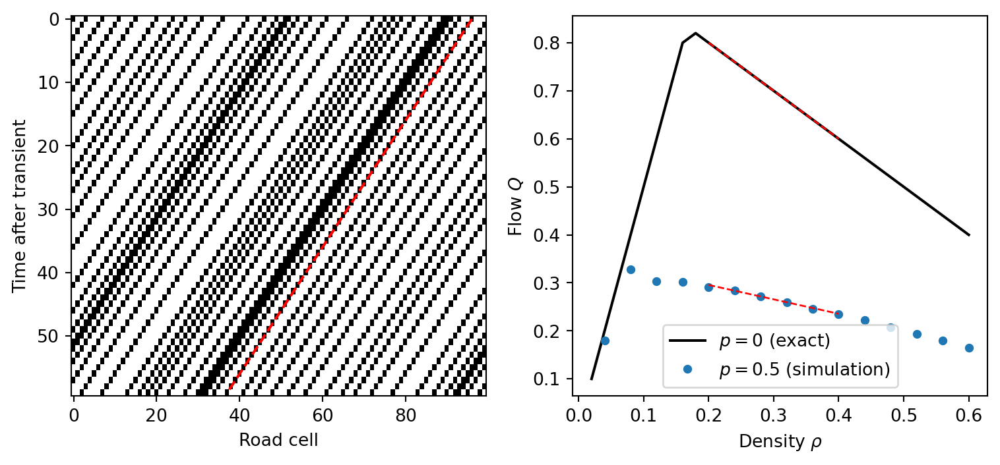

From Cars to a Continuum
Module 6: Explorables and Discrete Models
NoteReading
- Compulsory: the introduction and Section 3 of Nagel and Schreckenberg (1992).
- Related pages of the course: Social Force Model and Faster Is Slower: Crowds at a Door in Module 2.
The Nagel-Schreckenberg model describes every car. Traffic engineers often describe the road with a density field instead. The introduction of the paper recalls that fluid-dynamical approaches to traffic have existed since the 1950s, and that methods of nonlinear dynamics applied to them stressed the notion of a phase transition from laminar flow to start-stop waves (Nagel and Schreckenberg 1992). In its conclusion, the paper argues that the discrete model contains the transition from laminar to start-stop traffic of the fluid approach and keeps more elements of individual behaviour. This page connects the two descriptions, and then compares the traffic automaton with the continuous social force model that you met in Module 2.
Conservation of cars and kinematic waves
On a ring no car enters or leaves, so the number of cars is conserved. For a density \(\rho(x,t)\) averaged over a few cells and the corresponding flow \(q(x,t)\), conservation reads
\[ \frac{\partial \rho}{\partial t} + \frac{\partial q}{\partial x} = 0 . \tag{1}\]
This statement is exact for the number of cars. It is not yet a closed model. A closure assumes that the flow adjusts at once to the local density, \(q = Q(\rho)\), where \(Q\) is the fundamental diagram of the page The Fundamental Diagram. This is an approximation: it ignores the time that cars need to accelerate and the fluctuations of the random slowdown. With the closure, Equation 1 becomes \(\partial_t \rho + Q'(\rho)\,\partial_x \rho = 0\), so a small disturbance of density travels with the speed
\[ c(\rho) = Q'(\rho) . \tag{2}\]
For the deterministic model, \(Q(\rho) = \min(\rho\, v_{\max},\ 1 - \rho)\), so \(c = v_{\max}\) in free flow and \(c = -1\) in the congested phase. In free flow a disturbance moves with the cars. In the congested phase it moves backwards by one cell per step, against the traffic. The claim of the paper that the deterministic stationary pattern moves backwards by one site per step is exactly this statement (Nagel and Schreckenberg 1992).
For \(p = 0.5\) the slope of \(Q\) on the congested branch is still negative, so jams again travel backwards. A straight-line fit through simulated flows on a ring of 2000 cells at \(\rho = 0.20, 0.25, 0.30, 0.35, 0.40\) gives \(Q' \approx -0.30\), and the free-flow branch has slope \(v_{\max} - p = 4.5\) (a flow of \(0.09\) at \(\rho = 0.02\)). A direct measurement of the speed of the back-travelling pattern of stopped cars gave \(-0.35\) at \(\rho = 0.2\) and \(-0.40\) at \(\rho = 0.3\) and \(0.4\). Both are of the same order and have the same sign, but they are not equal. The local slope of \(Q\) varies between \(-0.25\) and \(-0.34\) over this range, the closure ignores the internal structure of a jam, and the measurement has a resolution of about \(0.05\) cells per step. We do not claim that Equation 2 predicts the jam speed of the stochastic model quantitatively.
NoteExercise
- Use Equation 2 to find the kinematic speed of the deterministic model with \(v_{\max} = 3\) at \(\rho = 0.1\) and at \(\rho = 0.5\). (b) Check the second value by simulation: start from random positions on a ring of 100 cells, run 500 steps, and find the shift \(s\) for which the occupancy after the next step equals the previous occupancy shifted by \(s\) cells.
TipSolution
The density of maximum flow is \(1/(v_{\max}+1) = 0.25\). At \(\rho = 0.1\) the flow is \(3\rho\), so \(c = 3\). At \(\rho = 0.5\) it is \(1 - \rho\), so \(c = -1\).
The code below returns the shift \(-1\) in every step, which means that the pattern moves one cell to the left.
import numpy as np
from amlab.cellular_automata.traffic_models import nasch_step, ring_initial
L, vmax = 100, 3
rng = np.random.default_rng(1)
x, v = ring_initial(L, 50, "random", vmax, rng)
for _ in range(500):
x, v = nasch_step(x, v, L, vmax, 0.0, None, rng)
before = np.zeros(L, dtype=int); before[x] = 1
x, v = nasch_step(x, v, L, vmax, 0.0, None, rng)
after = np.zeros(L, dtype=int); after[x] = 1
print([s for s in range(-L // 2, L // 2) if np.array_equal(np.roll(before, s), after)])[-1]Two ways to model crowds and traffic
The traffic automaton and the social force model of Module 2 are both models of agents that obstruct each other, and both produce jams. They differ in nearly every modelling choice. Table 1 lists the choices as defined on the pages of the course and in the paper.
The rows on the social force model follow the page Faster Is Slower: Crowds at a Door. The two models answer different questions. The automaton is built for the density-flow relation of a lane of identical cars, while the social force model is built for geometry: walls, doors and the shape of the room. A one-dimensional automaton has no way to represent an arch across a door, and a social force model of a ring road would be a costly way to obtain the fundamental diagram that the automaton gives cheaply.
NoteExercise
For each question, say whether you would use the traffic automaton, the social force model, or a continuum equation such as Equation 1, and give one reason. (i) How many cars per hour can one lane of a freeway carry? (ii) How long does it take to evacuate a lecture hall through two doors? (iii) How fast does the tail of a jam move upstream over several kilometres of road?
TipSolution
- The automaton. The fundamental diagram is its main output and it needs only cars on a lane. (ii) The social force model. The question is set by the geometry of the doors and by contact between bodies, which a lane model does not have. (iii) The continuum equation. Over several kilometres the individual cars do not matter and the kinematic speed of Equation 2 is the relevant quantity, with \(Q\) taken from measurements or from the automaton.
References
Nagel, Kai, and Michael Schreckenberg. 1992. “A Cellular Automaton Model for Freeway Traffic.” Journal de Physique I 2 (12): 2221–29. https://doi.org/10.1051/jp1:1992277.